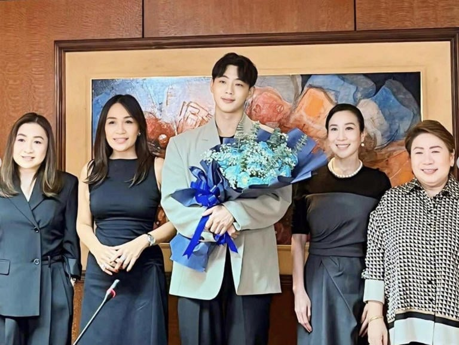

<html lang="en"></html>
<head>
    <meta charset="UTF-8">
    <meta name="viewport" content="width=>, initial-scale=1.0">
    <title>Entertainment</title>
    <link rel="stylesheet" href="style.css">
    <link rel="icon" href="logo.png" type="image/logo.png">
</head>
<body>
    <header>
        
    <ul>
        <li class="head"><a href="index.html" class = "link">Home</a></li>
        <li class="head"><a href="contact.html" class = "link">Contact</a></li>
        <li class="head"><a href="about.html" class = "link">About</a></li>
    </ul>

    <h1>ENTERTAINMENT</h1>

    
</header>
<section class="whole">
    <div class="bar" style="margin-top: -20;">
        <div id="menu">
            <section class="feature-box sec_1">
                <li class="nav"><a href="news.html" class="link"><center>News</center></a></li>
            </section>
            <section class="feature-box sec_1">
                <li class="nav"><a href="weather.html" class = "link"><center>Weather</center></a></li>
            </section>
            <section class="feature-box sec_1">
                <li class="nav"><a href="sports.html" class = "link"><center>Sports</center></a></li>
            </section>
            <section class="feature-box sec_1">
                <li class="nav"><a href="editorial.html" class = "link"><center>Editorial</center></a></li>
            </section>
            <section class="feature-box sec_1">
                <li class="nav"><a href="entertainment.html" class = "link"><center>Entertainment</center></a></li>
            </section>
        </div>
        </div>
<section class-="news">
          
    
 
<div class="news">

    <h1 class="news_1"> Korea actor Kim Ji-soo Officials signs contract with GMA's Sparkle</h1>
    <p class="article_duterte">
        South Korean actor Kim Ji-Soo signed a contract with Sparkle GMA Artist Center!

        GMA Network held a contract signing for Kim Ji-soo this Wednesday afternoon, August 28, where he received a warm welcome from the employees and GMA executives.
        
        "I am your oppa Kim Ji-soo," he happily greeted. "I am honored to share this new milestone in my acting career and signing with Sparkle GMA [Artist Center]. It will open new opportunities. I'm eager
        
    </p>
    <h2>SOURCE: <a href="     https://www.gmanetwork.com/entertainment/showbiznews/news/21355/korean-actor-kim-ji-soo-officially-signs-contract-with-gmas-sparkle/photo/290511/kim-ji-soo        " class="link">GMA</a></h2>
    </div>
    <section class="news">
        
        <h1 class="news_1">  Korea actor Kim Ji-soo Officials signs contract with GMA's Sparkle</h1>  
        <p class="article_duterte">
            IShowSpeed, an American content creator, surprised his Filipino fans when he arrived in the Philippines on September 11.

            He discussed his first day of visit experiences and activities in a three hours Youtube live titled " irl stream in Philippines". He even had a blue jersey with the word "Pilipinas" written on it.
            
            He walked through the streets of Manila, greeting his fans. He played basketball and received a jersey as a gift from a fan. 
            He bought Filipino snacks from a sari-sari store and rode a kalesa and motorcycle while carrying the Philippines flag. And he
             also made hints about meeting Manny Pacquiao.
            
        </p>
        <h2>SOURCE: <a href="https://www.wheninmanila.com/ishowspeed-in-manila-massive-welcome-filipino-fans/#google_vignette" class="link">When in Manila</a></h2>
    </section>
    <section class="news">
        
        <h1 class="news_1">Olivia Rodrigo arrives in Manila</h1>  
        <p class="article_duterte">
           
    Olivia Rodrigo, a Filipino-American pop star, arrived in the Philippines for her "Guts World Tour" concert at the Philippines Arena on October 5.
  
    Olivia Rodrigo arrived at the airport in the afternoon of October 3 with her boyfriend, Louis Patridge, a British actor.
    
    Before her arrival, she shared a TIktok video of herself dubbing an her past interview  in which she talked about growing up around Filipinos and liking foods like lumpia and adobo.
    
    "On my way to the Philippines!!! I'm sooooooo excited!!!" Rodrigo wrote in the caption.
    
    She also posted a photo of halo-halo on her Instagram story with the caption "Halo-halo secured!!!! So excited to be in the Philippines, " expressing her excitement to be in the Philippines and to try the halo-halo.
    
    Rodrigo announced via her social media sites on September 10 that her "Silver Star" concert will be coming to the Philippines on October 5 at the 55,000 capacity Philippine Arena.
    
    Her concert tickets cost P1,500 (plus taxes) and a maximum purchase of four tickets per buyer, aiming to make her performances accessible and affordable.
    
    
        <h2>
            SOURCE: <a href= "https://www.manilatimes.net/2024/10/04/entertainment-lifestyle/show-times/olivia-rodrigo-arrives-in-manila/1979127
" class="link">Manila Times</a>
        </h2>
    </section>
        
    </section>
    </section>


</section>
    
<footer>
    <p><center>&copy Dyurnal-ist 2024 All rights reserved</center></p>
</footer>

</body>
</html>